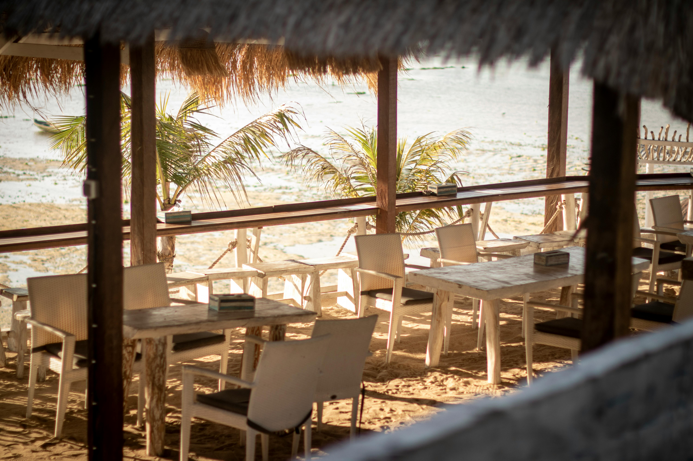

Dining on Taniti
Taniti offers several dining options for visitors who want to enjoy both local cuisine and familiar meals.

Local Cuisine
Five restaurants serve mostly local fish and rice, giving visitors a chance to enjoy regional flavors and island specialties.
American-Style Meals
Three restaurants offer American-style dishes for travelers looking for familiar options during their stay.
Pan-Asian Cuisine
Two restaurants feature Pan-Asian cuisine, adding more variety to the island’s dining scene.
Groceries and Convenience
- Two supermarkets
- Two smaller grocery stores
- One convenience store open 24 hours a day
Visitors staying longer or using vacation-style lodging can also make use of local grocery options throughout the island.
Back to Home